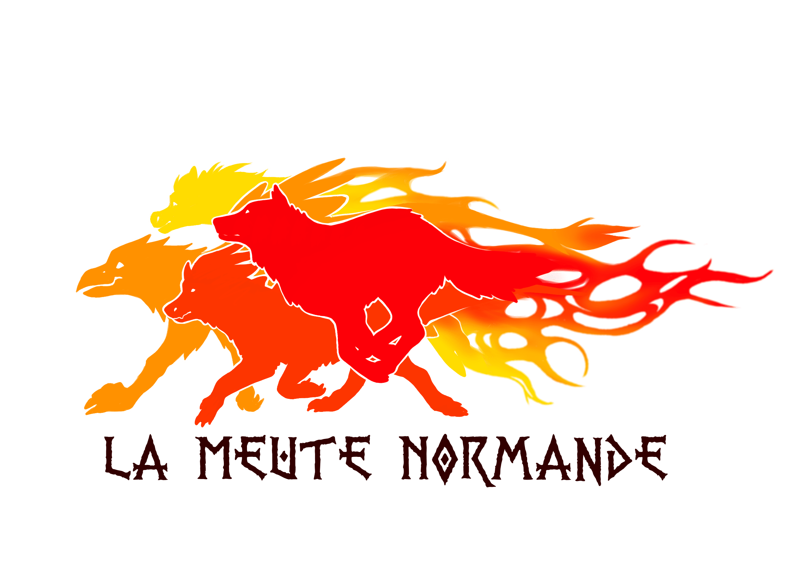
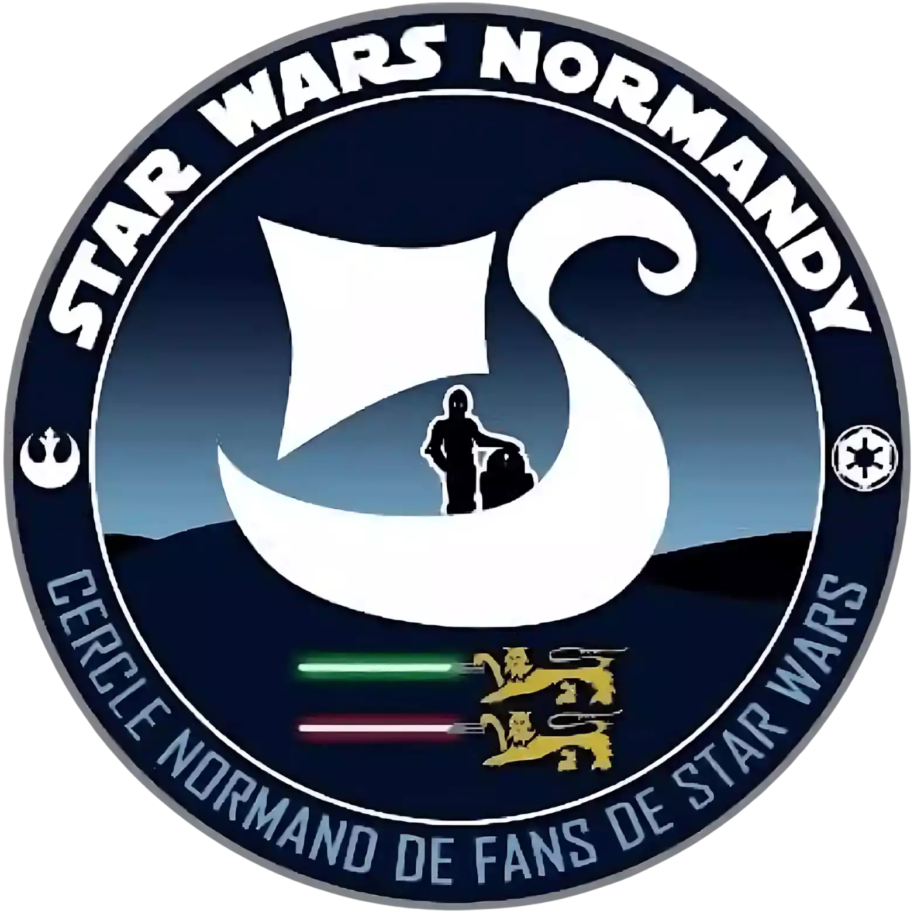

kylian
varin
Étudiant à la Normandie Web School
Recherche Stage/Alternance
Disponible dès maintenant
Communication/Marketing Digitale
competences
- Wordpress
- suite Adobe
- Exel
- Canva
- Photofiltre
- Wordpress
- QGIS
- PowerPoints
- Photofiltre
- Capcut
- visuial Studio Code
- FireAlpaca
interets
Étude de la Faune et de la Flore
jardinage animation/théâtre/cosplays,
marche à pied, couture, création de costume
Animation Convention, lieux public, Hopital avec la meute
Normande et Star Wars Normandy


projets personnels
Création d’un site web botanique référencé cartographiant et décrivant
les plantes de Rouen
Développement de l’association Star Wars Normandie (gestion réseaux
sociaux) et animation auprès des enfants
formation
★ Normandie Web School (2024-2027)
Analyse Marketing
Création de site WordPress
SEO/SMO
Calendrier éditorial
Rédaction web
Charte graphique
★ Formation OpenClassrooms (2024)
Initiez-vous au Marketing digital
Créez un site moderne et professionnel avec WordPress
★ Lycée Agricole de Tourville sur Pont-Audemer
Baccalauréat STAV. Mention bien
experiences
★ Responsable Réseaux Sociaux - Star Wars Normandie (2023)
Création de flyer, affiches
Gestion des réseaux sociaux
Création de support vidéo
Rédaction webCharte graphique
★ CDI Burger King (2023)
Gestion d'équipe
Accueil des clients
Service à table
★
Travail saisonniers en restauration
sarl glc grill oxxo
Préparation ingrédients
Services à table
Préparation des plats
★Stage 8 semaine
syndicat mixte baie de somme
grand littoral picard
Inventaire floristique
Réalisation d'un catalogue floristique
Réalisation de carte/création d'une base de donnée